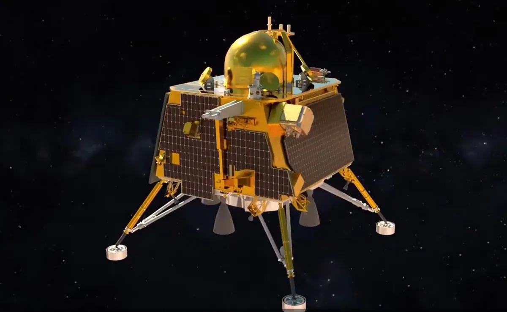
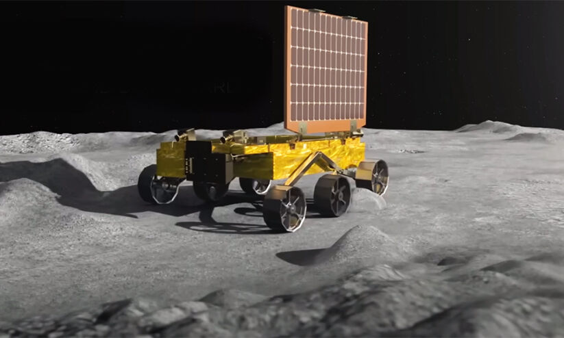

The Indian Space Research Organisation (ISRO) had undertaken two previous missions to
the moon,
namely,
the
Chandrayaan I and the Chandrayaan II. Chandrayaan-1 was launched in 2008 and lasted till 2009
after
communications to it were lost. The mission, among other things, tested a crash landing on the
lunar
surface. Chandrayaan-2, launched in 2019 attempted a soft landing on the moon but failed. The
third
mission,
Chandrayaan-3 took into account the drawbacks and lessons learnt from the second mission and
successfully
achieved soft landing.
Lander payloads: Chandra’s Surface Thermophysical Experiment (ChaSTE) to measure the
thermal
conductivity and temperature; Instrument for Lunar Seismic Activity (ILSA) for measuring the
seismicity around the landing site; Langmuir Probe (LP) to estimate the plasma density and its
variations. A passive Laser Retroreflector Array from NASA is accommodated for lunar laser
ranging
studies.
Rover payloads: Alpha Particle X-ray Spectrometer (APXS) and Laser Induced Breakdown
Spectroscope (LIBS) for deriving the elemental composition in the vicinity of landing site.
Chandrayaan-3 consists of an indigenous Lander module (LM), Propulsion module (PM) and a Rover
with
an
objective of developing and demonstrating new technologies required for Inter planetary
missions.
The
Lander will have the capability to soft land at a specified lunar site and deploy the Rover
which
will
carry out in-situ chemical analysis of the lunar surface during the course of its mobility. The
Lander
and the Rover have scientific payloads to carry out experiments on the lunar surface. The main
function
of PM is to carry the LM from launch vehicle injection till final lunar 100 km circular polar
orbit
and
separate the LM from PM. Apart from this, the Propulsion Module also has one scientific payload
as a
value addition which will be operated post separation of Lander Module. The launcher identified
for
Chandrayaan-3 is LVM3 M4 which will place the integrated module in an Elliptic Parking Orbit
(EPO)
of
size ~170 x 36500 km.
The Vikram lander is responsible for the soft landing on the Moon. It is also box-shaped, with four landing legs and four landing thrusters capable of producing 800 newtons of thrust each. It carries the rover and various scientific instruments to perform on-site analysis. The lander has four variable-thrust engines with slew rate changing capabilities, unlike Chandrayaan-2's lander, which had five, with the fifth one being centrally mounted and capable only of fixed thrust. One of the main reasons for Chandrayaan-2's landing failure was attitude increase during the camera coasting phase. This was removed by allowing the lander to control attitude and thrust during all phases of descent. Attitude correction rate is increased from Chandrayaan-2's 10°/s to 25°/s with Chandrayaan-3. Additionally, the Chandrayaan-3 lander is equipped with a laser Doppler velocimeter (LDV) to allow measuring attitude in three directions.[24][25] The impact legs have been made stronger compared to Chandrayaan-2 and instrumentation redundancy has been improved. It will target a more precise 16 km2 (6.2 sq mi) landing region based on images previously provided by the Orbiter High-Resolution Camera onboard Chandrayaan-2's orbiter. ISRO improved the structural rigidity, increased polling in instruments, increased data frequency and transmission, and added additional multiple contingency systems to improve lander survivability in the event of failure during descent and landing
The Pragyan rover is a six-wheeled vehicle with a mass of 26 kilograms (57 pounds). It is 917 millimetres (3.009 ft) x 750 millimetres (2.46 ft) x 397 millimetres (1.302 ft) in size.[27] The rover is expected to take multiple measurements to support research into the composition of the lunar surface, the presence of water ice in the lunar soil, the history of lunar impacts, and the evolution of the Moon's atmosphere.
